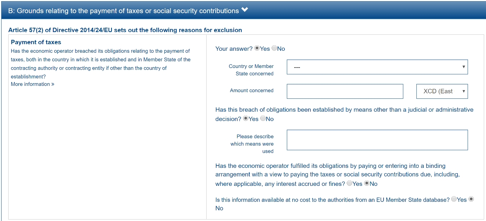
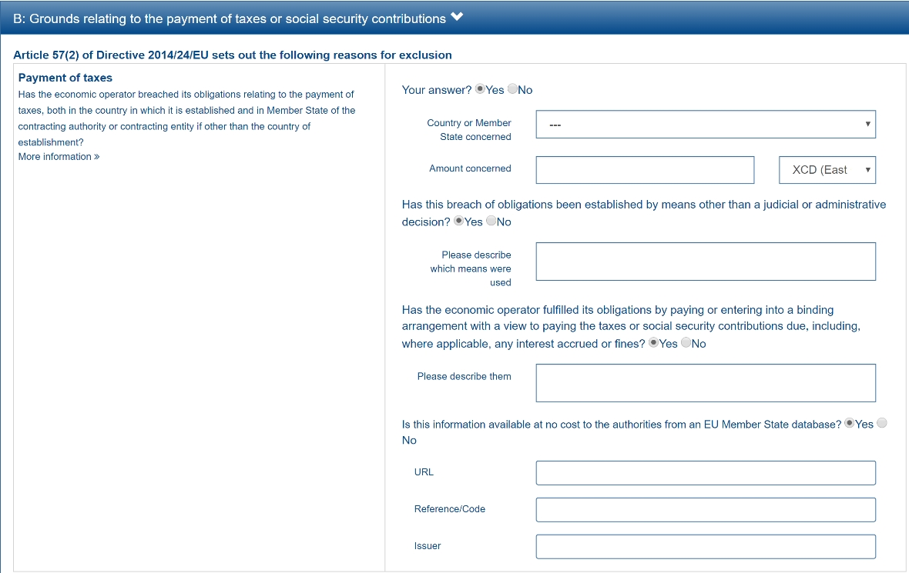

How Criteria Work
Criterion Structure
The ESPD-EDM defines a flexible structure to express data about criteria. Based on this structure, UBL-2.4 defines the component cac:TenderingCriterion, which is used in ESPD-EDM to implement the XML objects for exclusion and selection criteria.
Figure 1. Criterion - UML diagram
General behaviour
-
One criterion may have descendent 'sub-criteria'. This is useful to define national exclusion criteria that specialise EU criteria;
-
One criterion may refer to one or several pieces of legislation (EU, national, other);
-
One criterion must always contain at least one group of 'properties'. Properties may be informative captions, general requirements issued by the Member State, procedure-specific requirements specified by the buyer, or questions addressed to the economic operator;
-
One group of properties must always specify at least one 'property';
-
One group of properties may contain one or several 'sub-groups' of properties.
Groups of Properties
One group of properties may include one or more 'sub-groups' of properties (class cac:SubsidiaryTenderingCriterionPropertyGroup).
A sub-group of properties 'is a' group of criteria — it is the same component but qualified as 'subsidiary'. Therefore all the rules applicable to property groups are also applicable to sub-groups.
PropertyGroupTypeCode
Three codes defined in the code list PropertyGroupType control the behaviour of groups and subgroups:
-
ON*: the GROUP or SUBGROUP has to be processed always;
-
ONTRUE: the GROUP or SUBGROUP has to be processed only if the value of the closest parent QUESTION of type INDICATOR is true;
-
ONFALSE: the GROUP or SUBGROUP must be processed only if the value of the closest parent QUESTION of type INDICATOR is false.
These codes implement a "choice" or "switch/case" mechanism inside a Criterion Data Structure. Software applications building the GUI dynamically should show ONTRUE groups when the answer is true, hide them when false, and vice versa for ONFALSE groups. Groups marked as ON* are always shown.
Properties
REQUIREMENT |
The buyer needs to be able to specify the type of the value it expects from the economic operator in a response; e.g. DESCRIPTION, INDICATOR, QUANTITY, URL, etc. The economic operator must provide a value for the response that is consistent with the type specified by the buyer. |
Types of Properties
The differences between REQUIREMENT, CAPTION and QUESTION:
-
A REQUIREMENT is a condition, restriction or rule established by the Member State (for all procedures) or the buyer (for the specific procedure). REQUIREMENTs are not intended to be responded by the economic operator, but the economic operator must comply with them. Examples: 'Provide at least three references to similar works', 'The expected lowest general yearly turnover is 1,000,000 EUR'.
-
A CAPTION is a label normally used to introduce a group of REQUIREMENTs or QUESTIONs; e.g. 'Lots the EO tenders to'.
-
A QUESTION is a direct request for a specific datum by the MS or the Buyer addressed to the EO. The EO has to respond with a value of the expected type.
ValueDataTypeCode
The type of answer expected by the buyer is specified in cbc:ValueDataTypeCode, using codes from the ResponseDataType code list. If the property type is CAPTION or REQUIREMENT, the data type must be NONE.
GUI Control Elements
ONTRUE/ONFALSE in practice
The screen captures below illustrate how the ONTRUE/ONFALSE mechanism works in an ESPD Service GUI for the Exclusion Criterion "Contributions":

Figure 2. Case 1: When the first QUESTION "Your Answer?" is set to false

Figure 3. Case 2: When the first QUESTION "Your Answer?" is set to true

Figure 4. Case 3: When both INDICATOR questions are set to true

Figure 5. Case 4: When all INDICATOR questions are set to true
Radio-Button and Check-box controls
For the special criterion 'Other economic or financial requirements' (finan-requ), an additional GUI control mechanism is provided via the BooleanGUIControlType code list. Values RADIO_BUTTON_TRUE and RADIO_BUTTON_FALSE instruct the application to display radio buttons or check boxes to toggle between ONTRUE/ONFALSE subgroups.
Further information
-
For detailed element reference tables (Criterion, Legislation, Property Group, Property), see Criteria Catalogue.
-
For exclusion criteria details, see Exclusion Grounds.
-
For selection criteria details, see Selection Criteria.
-
For validation rules on criteria, see Validation and Conformance.
Any comments on the documentation?